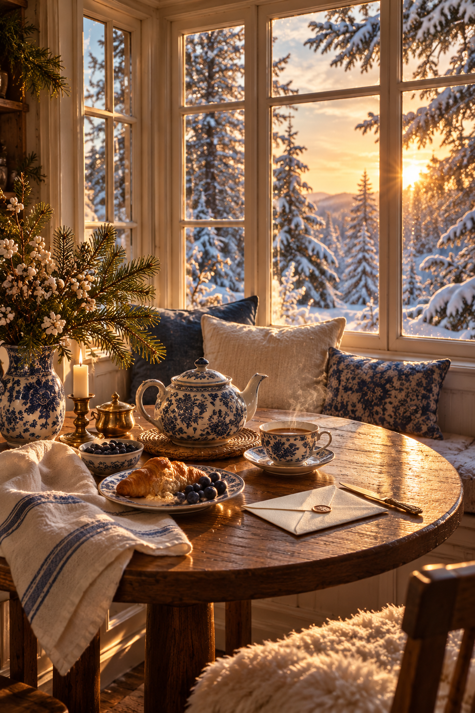
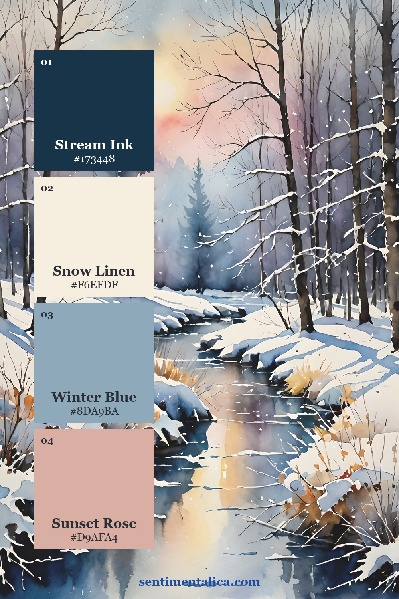
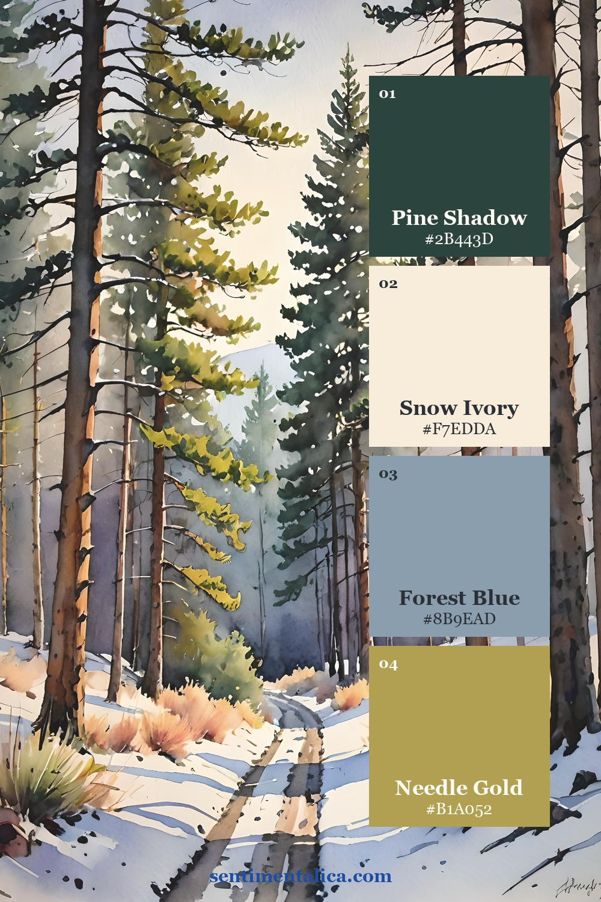
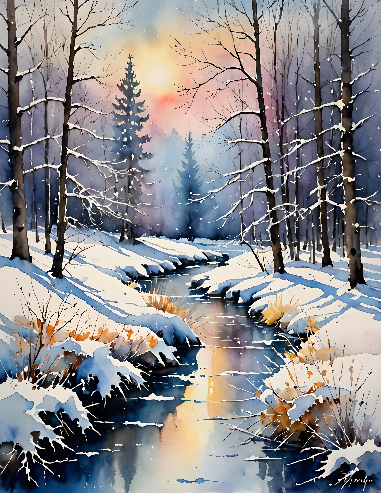
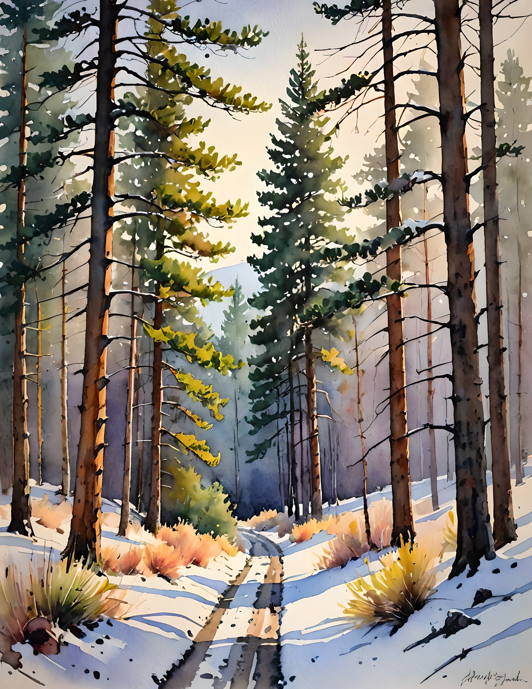
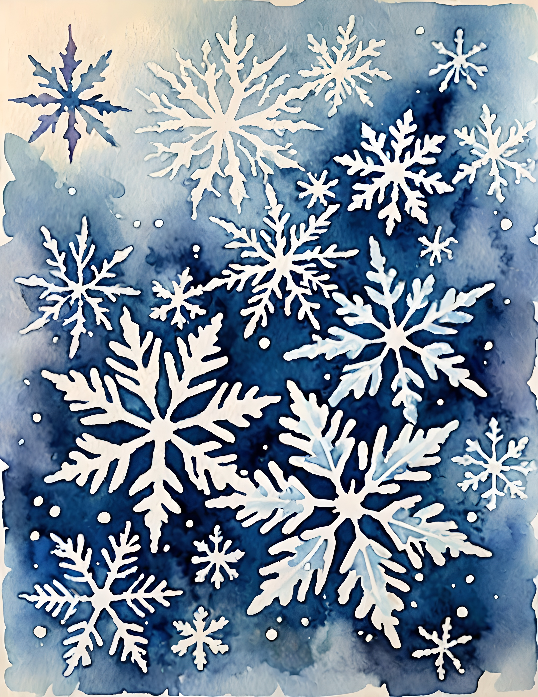
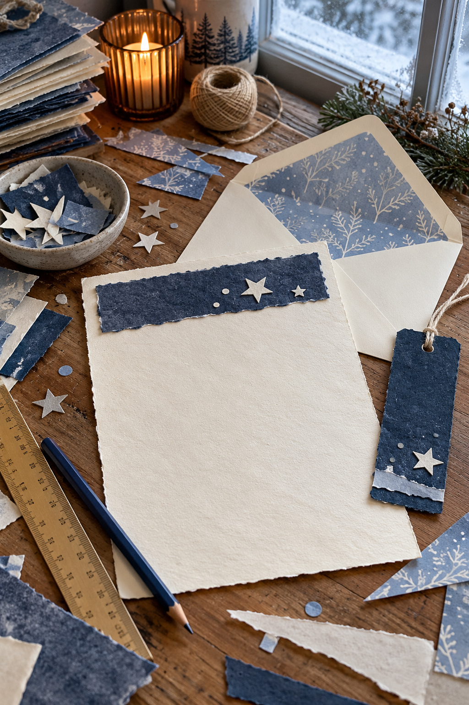
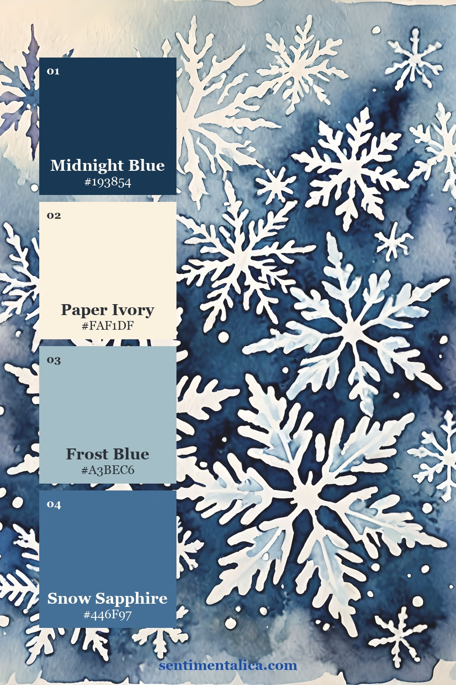

A winter letter set feels special when its pieces belong together without looking identical. You can make that connection with one blue image, a narrow strip of related paper, and a small keepsake tucked beside a handwritten note.
Keep the writing surface plain. The printed artwork does its best work at the edges: inside an envelope, beside the first line, or on the back of a little card. Gather writing paper, an envelope, lightweight printable paper, scissors, a pencil, adhesive, and a scrap of thin cardstock.

Decide what will match
Give each part a different share of the pattern. Let the envelope liner show the largest image area. Add only a slim heading strip to the letter. Make the keepsake from a quieter crop, with a handwritten winter memory on its plain reverse.
This change of scale is what makes a set feel considered. Three large scenic panels can compete with the actual letter; one generous image and two small echoes leave space for your words.
Repeat a color or a paper edge. You do not have to repeat the whole picture.
Establish a blue and paper balance
Indigo gives the set its darkest point. Put it where a strong edge is useful, such as the envelope liner or the back of the keepsake. Let snow white or clean ivory remain the largest visible area on the letter itself.

Icy blue works as the middle note between a dark liner and pale stationery. A narrow blue strip across the top can connect them without surrounding the page in a heavy frame. Leave a little space below it before beginning the date and greeting.

Find three related crops
Winter Blue includes snowy forests, sunset rivers, white snowflakes, frosted blooms, blue lanterns, and windowsill scenes. You can keep the set entirely wintry by choosing a forest image and snowflake detail, or make it more domestic with a lantern and a quiet windowsill crop.
Look at the real collection pages below for color relationships. The pack provides artwork; the stationery shapes and liner are pieces you measure and make for your own envelope.



Fit the liner to your envelope
Open the envelope flap and trace its outside shape onto scrap paper. Cut the test shape slightly smaller along the sides, then shorten the bottom so it slides inside without bunching. Keep the liner below the envelope’s adhesive strip.
Test the shape in the empty envelope before cutting printed paper. Fold the flap once with the test liner in place and mark that crease. When the printed version fits, attach only the flap area lightly; leaving the lower portion free helps the envelope fold without pulling.

Add a small warm note
A little amber, gold, or rose from the artwork keeps the blues from feeling severe. Choose one warm detail for the keepsake, then let it be the only warm accent outside the liner. A short handwritten line on the reverse might remember a first frost or a favorite quiet walk.

Back the keepsake with thin cardstock if you want it to survive repeated handling. Keep it small enough to slip into the envelope without bending. Avoid bulky knots, wax, or thick layers if the letter will travel through the post.
Finish by checking the envelope with every piece inside. It should close without force and lie reasonably flat. Write the address on a clear, plain area, then check local postage requirements for the finished weight and thickness. Your winter palette can stay inside, waiting to be discovered when the letter is opened.